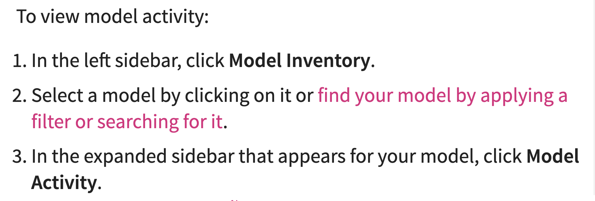
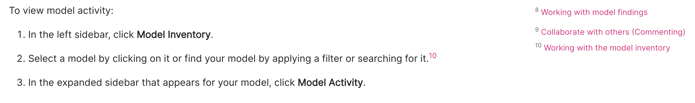

Conventions
A message can only make an impact when it is received, so presentation is (almost) everything.
Comprehensive assistance
Conveying knowledge and empowering users starts in the product interface. While external documentation can be helpful for supporting advanced functionality, users should not be lost on the basics without further reading.
- Make it interactive. Embedded user tutorials should exist whenever possible, and be intuitive and not obstructive.
- Show only what’s necessary when necessary. Progressive disclosure1 can help guide workflows as well as minimize visual clutter.
1 Wikipedia: Progressive disclosure
American English
While the ValidMind community spans far and wide, its heart finds its home in Palo Alto, California. When writing for ValidMind, keep things consistent by using American English2 spelling and grammar conventions.
2 US Department of State: American English
| Correct | Incorrect |
|---|---|
| At the center of this page, you will see the elements organized from most recent to least recent by default. | At the centre of this page, you will see the elements organised from most recent to least recent by default. |
Titles
- Task titles should always start with a verb and nouns should be in the plural if they describe an object acted on.
- For tasks that have child topic tasks, the starting verb should always be a gerund (“-ing”).
- Reference titles should include only the name of the content described unless it emcompasses a broader range of topics, in which case the title should end in “reference”.
| Correct | Incorrect |
|---|---|
| Register records in the inventory | Inventory record registration |
| Working with the inventory | Use the inventory |
| Developer reference | Articles for developers |
Formatting
Sentence case
In general, follow sentence-style capitalization3 to minimize the confusion of when to capitalize and when not to capitalize.
3 Microsoft: Capitalization
- Exceptions include referencing specific elements in the user interface (UI) that have their own casing to ensure that documentation matches the user experience, or when generating titles of publications such as blog posts.
- For UI elements that are in all caps, use the markdown smallcaps class to display these elements.
| Correct | Incorrect |
|---|---|
| Get started with ValidMind | Get Started with ValidMind |
| In the left sidebar, click Inventory. | In the left sidebar, click inventory. |
| Honor the Human with ValidMind | Honor the human with ValidMind |
On the landing page of your model, locate the [model status]{.smallcaps} section: |
On the landing page of your model, locate the MODEL STATUS section: |
Headings
- Make them imperative! Individual task headings are a call to action. Gerunds (“-ing”) are acceptable when introducing a set of instructions with individual tasks.
- Avoid numbered headings. Most headers do not require numbering, as order can be discerned from context. Numbering headers can make it difficult to shift information around when information changes.
- Don’t use terminal punctuation. While headings should be in sentence case, they are not sentences.
| Correct | Incorrect |
|---|---|
| Login to ValidMind | 1. Logging into ValidMind. |
Responsive columns
To make sure our docs site works well on mobile, we use Tachyons CSS4 with flexbox. Quarto’s default support for CSS Grid is not responsive and should not be used.
4 GitHub: Tachyons Extension For Quarto
Correct:
:::: {.flex .flex-wrap .justify-around}
::: {.w-50-ns}
Column 1, 50% wide
:::
::: {.w-50-ns}
Column 2, 50% wide
:::
::::Incorrect:
::: {.grid}
::: {.g-col-6}
Column 1, 50% wide
:::
::: {.g-col-6}
Column 2, 50% wide
:::
:::Inline links
- Keep hyperlinks in instructional text minimal — too many links can misdirect the user from the task at hand.
- When possible — such as any time instructions are not single-sourced — instead of multiple inline links, make use of margin footnotes.5
- Whenever possible, make the link the title of the destination article. This also solves the issue of links with nebulous descriptions that do not match article titles, or links whose destinations are not clear to the user such as “Read more.”
- When constructing links, refer to the
.qmdfile as Quarto will properly render these into.htmllinks on your behalf and check to see if the destinations are able to be resolved. - When constructing filepaths, you’ll also want start with the root directory whenever possible as this minimizes usage of unclear relative paths.
5 Quarto: Footnotes
| Correct | Incorrect |
|---|---|
[Configure workflows](/guide/workflows/configure-workflows.qmd) |
[Learn more ...](/../../configure-workflows.html) |
Margin footnotes
Other than in single-sourced files, number all footnotes and place the footnotes at the very end of the page:
<!-- IN THE BODY OF YOUR CONTENT --> - The record is registered in the inventory.[^1] - You've already customized your record stages for use in workflows.[^2] - Workflows have already been set up for use with your records.[^3] - You are assigned a role that has access to complete actions set up by workflows.[^5] <!-- AT THE END OF YOUR .QMD PAGE --> <!-- FOOTNOTES --> [^1]: [Register records in the inventory](/guide/inventory/register-records-in-inventory.qmd) [^2]: [Manage record stages](manage-record-stages.qmd) [^3]: [Configure workflows](configure-workflows.qmd) [^5]: [Manage permissions](/guide/configuration/manage-permissions.qmd)In single-source files, either place the link inline for training materials formatted in
revealjs,6 or use an embedded footnote for our normal user guides.You can use Quarto’s ability to display conditional content7 to do both in the same file:
To view record activity: <!-- EMBEDDED FOOTNOTES FOR STANDARD USER GUIDES --> :::: {.content-visible unless-format="revealjs"} 1. In the left sidebar, click ** Inventory**. 1. Select a record or find your record by applying a filter or searching for it.^[[Working with the inventory](/guide/inventory/working-with-the-inventory.qmd#search-filter-and-sort-records)] 1. In the expanded sidebar that appears for your record, click ** Activity**. :::: <!-- INLINE LINKS FOR REVEALJS TRAINING --> :::: {.content-hidden unless-format="revealjs"} 1. In the left sidebar, click ** Inventory**. 1. Select a record or [find your record by applying a filter or searching for it](/guide/inventory/working-with-the-inventory.qmd#search-filter-and-sort-records){target="_blank"}. 1. In the expanded sidebar that appears for your record, click ** Activity**. ::::Inline vs footnotes links examples Inline links in training Footnotes in user guides 

7 Quarto: Conditional Content
Footnotes will automatically appear in the correct location in the margin, regardless of their origin or format.
| Correct | Incorrect |
|---|---|
 |
 |
Emphasis
Use emphatic styling sparingly, in order not to overwhelm the reader with visual distractions.
- Bolding — Some light bolding can be helpful to draw attention to core concepts. Bolding is also used to highlight UI elements that the user can interact with, such as links or buttons.
- Italics — Italics should not be used for emphasis, only for first uses of terms on the page to set the stage.
- Quotation marks — Quotation marks should generally only be employed for quoting speech.
| Correct | Incorrect |
|---|---|
| At ValidMind, we value transparency and accessibility — we aim to speak simply and effectively. (e.g. Highlighting the important concept within a sentence.) | At ValidMind, we value transparency and accessibility — we aim to speak simply and effectively. (e.g. Highlighting the entire sentence.) |
| In the ValidMind Platform, click Inventory on the left sidebar. | In the ValidMind Platform, click “ Inventory” on the left sidebar. |
| Uncertainty can be summed up as the difference between reality and the outputs from the model selected to approximate reality. | “Uncertainty” can be summed up as the difference between reality and the outputs from the model selected to approximate reality. |
| “ValidMind is the only platform today that is purpose-built for model risk management professionals in the banking industry,” Jacobi says. | At ValidMind, we value “transparency and accessibility” — we aim to speak simply and effectively. |
Callouts
We use two types of callouts8 to call attention to supplementary information or issue warnings:
8 Quarto: Callout Blocks
.callout-important
For warnings and caveats. Warnings, important information, and cautions should follow this format.
| Correct | Incorrect |
|---|---|
::: {.callout title="Example note or tip"} |
::: {.callout-note title="Incorrect note"} |
::: {.callout-important title="Example warning, important, or caution"} |
::: {.callout-warning title="Incorrect warning"} |
Content types
Filenames
Filenames should generally match the title of the article9 or concisely summarize the content, and be descriptive but not overly lengthy.
9 Titles
- Filenames for concepts should generally only be made up of nouns and end in
-overviewif they introduce a product area. - Do not include extraneous keywords.
- A good filename makes the contents obvious!
| Correct | Incorrect |
|---|---|
style-guide.qmd |
style-guide-technical-writing.qmd |
example-model-workflow.png |
customize-workflow-mrm-governance.png |
model-documentation-overview.qmd |
automated-testing-and-documentation.qmd |
model-lifecycle.gif |
img4.gif |
For example, for an original file named site/guide/overview.qmd moved and renamed to site/about/new-overview.qmd, you would insert the following into the new-overview.qmd’s YAML header:10
---
title: "New overview"
aliases:
- /guide/overview.html
---10 Quarto: Redirects
Screenshots
- Screen captures of the UI or other elements to assist users with their tasks should have the
.screenshotclass applied to them, which will add a border distinguishing the image from the rest of the text. - When necessary, interactive elements within a larger complex screenshot should be highlighted for ease of comprehension.
- By default, lightbox style images to allow users to enlarge for details is set globally.11
11 Quarto: Lightbox Figures
| Correct | Incorrect |
|---|---|
 |
|
{width=70% fig-alt="Screenshot of the verification email sent by ValidMind" .screenshot} |
{width=80%} |
Videos
- For internally hosted videos, YouTube hosted videos and playlists, and other videos that can be hotlinked, use Quarto’s built-in video embed functionality.12
- For videos services that cannot be hotlinked (for example, Loom), use their provided embed code with our custom styling appended to the
iframe.
12 Quarto: Videos
Hotlinked
{{< video https://www.youtube.com/embed/rIR8Mql7eGs?si=vnZA_zP4tAjFjI4r title='ValidMind Quickstart' >}}Embedded
<div style="position: relative; padding-bottom: 65.2962515114873%; height: 0;"><iframe src="https://www.loom.com/embed/4d0572607d254b04a5c951b4d3f91f73?sid=ac7ffa93-e9e2-42f0-9392-abcf8d52c104" frameborder="0" webkitallowfullscreen mozallowfullscreen allowfullscreen style="position: absolute; top: 0; left: 0; width: 90%; height: 90%; box-shadow: 5px 5px 5px #ccc; border-radius: 5px; border: 1px solid #196972;"></iframe></div>Code
- Format code in its own code block.13
- Declare the code language within the pre-formatted block to properly trigger syntax highlighting.
13 Quarto: Source Code
14 Jupyter Notebooks: Code Cells
Within a Jupyter Notebook, simply use a code cell14 rather than a markdown cell.
Correct:
%pip install -q validmind
Using Python, call
%pip install -q validmind.Parameters, values, and files
Use backticks to enclose keyboard commands, parameters, field values, and file names/extensions.
| Correct | Incorrect |
|---|---|
Learn how to store record identifier credentials in a .env file instead of using inline credentials. |
Learn how to store record identifier credentials in a “.env” file instead of using inline credentials. |
For example, the classifier_full_suite test suite runs tests from the tabular_dataset and classifier test suites to fully document the data and model sections for binary classification model use cases. |
For example, the “classifier_full_suite” test suite runs tests from the “tabular_dataset” and “classifier” test suites to fully document the data and model sections for binary classification model use cases. |
Under When these conditions are met, you are able to set both AND and OR conditions. |
Under When these conditions are met, you are able to set both “AND” and “OR” conditions. |
Mathematics
- Mathematical formulas should be rendered using LaTeX formatting.15
- On our WordPress blog posts, this is taken care of by the WP Quick LaTeX plugin.16
15 Quarto: LaTeX Equations
16 WordPress: WP QuickLaTeX
| Correct | Incorrect |
|---|---|
| \(likes \sim Binomial(n_{feedbacks},p_{like})\) | $likes \sim Binomial(n_{feedbacks},p_{like})$ |
Proper nouns
In the context of model risk management, proper nouns include specific models, laws, or regulations, such as “Basel IV” or “SR 26-2.” These refer to specific frameworks or guidelines and you spell them with initial capital letters or exactly as indicated by official sources.
- Terms that are not proper nouns include general concepts such as “model validation,” “stress testing,” “risk assessment,” and “backtesting.”
- These are common terms in the field and are not capitalized unless starting a sentence.
| Correct | Incorrect |
|---|---|
| SS1/23 – Model risk management principles for banks | Model Validation |
| validation report | basel 4 |
| machine learning | Financial Services industry |
Product names
Within our documentation (https://docs.validmind.ai/), you are able to reference constants such as the ValidMind Library and ValidMind Platform via variables.17
17 Quarto: Variables
- Use the variables shown on the table below instead of writing out the phrases to enable consistency between guides everywhere except for image alt text or Mermaid charts.18
- If product names need to be updated, simply amend the
_variables.ymlfile19 to see changes reflected throughout all guides. - Please note that variables will not work within any of the Jupyter Notebook code samples20 as these are technically standalone files.
| Product Name | Variable Key | Description |
|---|---|---|
ValidMind AI Risk Platform |
{{< var validmind.product >}} |
Comprehensive suite of tools with a library for documenting and testing records (such as models), alongside a platform hosting cloud-based tools, APIs, databases, and validation engines. |
ValidMind Library |
{{< var validmind.developer >}} |
Open-source library that connects to the ValidMind Platform. |
ValidMind Platform |
{{< var validmind.platform >}} |
Hosted multi-tenant architecture that includes a cloud-based web interface. |
ValidMind Library Python API |
{{< var validmind.api >}} |
Used to make calls to the ValidMind Library.21 |
ValidMind |
{{< var vm.product >}} |
Short form of ValidMind AI Risk Platform. |
library |
{{< var vm.developer >}} |
Short form of ValidMind Library. |
platform |
{{< var vm.platform >}} |
Short form of ValidMind Platform. |
Python API |
{{< var validmind.api >}} |
Short form of ValidMind Library Python API. |
https://app.prod.validmind.ai |
{{< var url.us1 >}} |
US-hosted ValidMind Platform URL. |
https://app.ca1.validmind.ai |
{{< var url.ca1 >}} |
CA-hosted ValidMind Platform URL. |
Training materials
The ValidMind Academy22 is delivered in Revealjs presentation format,23 with a slightly different set of conventions:
23 Quarto: Revealjs
Training courses consist of:
Training materials use several supplementary style sheets to apply an alternate site theme, applied by a directory metadata file:26
Each course lives in its own subdirectory within our training, where the name of the directory reflects the name of the course.
| Correct | Incorrect |
|---|---|
/training/administrator-fundamentations/ |
/training/administrator-training-course-1 |
Course registration
Course registration pages outline what the course covers and how to sign up for the course.
Course slides
- Training slides make use of Tachyons CSS29 styled with our custom
.overlayclass to provide demonstration overlays.
29 GitHub: Tachyons Extension For Quarto
Example overlay box:
:::: {.fr .f3 .mv5 .nr4 .pa5 .overlay}
From ** Settings** in the ValidMind Platform, <br>you can:
- Set up your organization
- Onboard new users
- Manage roles, groups and <br>permissions
- Configure the inventory
- Manage templates and workflows
- And much more!
Try it **live** on the next page.
::::{kind=link}
- Training slides use inline links only instead of footnotes,30 as footnotes are not visible in presentation mode.
- To use lightbox style images within training slides,31 add the following to the YAML header:
30 Inline links
31 Screenshots
lightbox: true